Nature Anthracite
Pack de design de l'atelier de dessin Notely : éléments isolés en SVG et PNG transparents, tirés du concept.
pastel sec, feuilles discrètes, boutons sombres, sélection crème et bronze
01Roue chromatique
Vecteur : touches de pastel posées une à une, teintes et bords irréguliers. À droite, la roue extraite du concept.
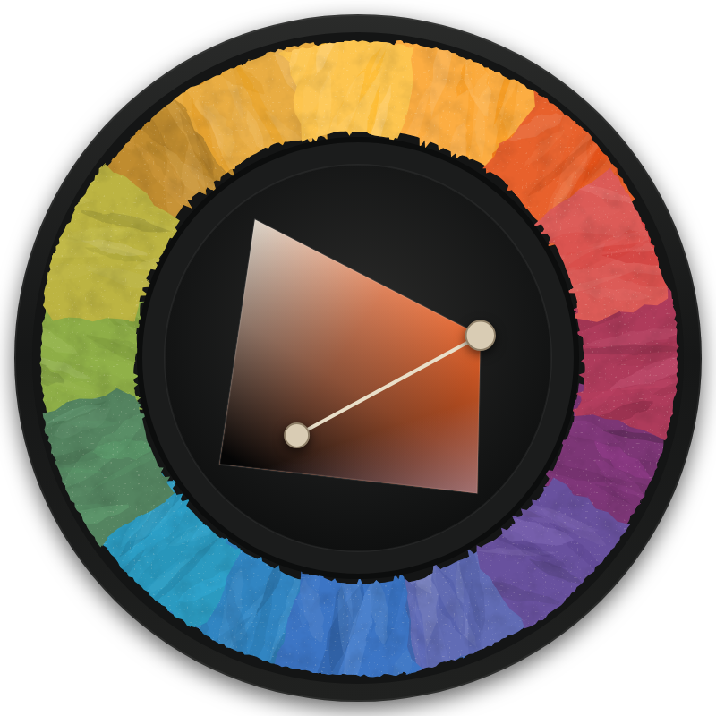
roue-pastel-complete.svg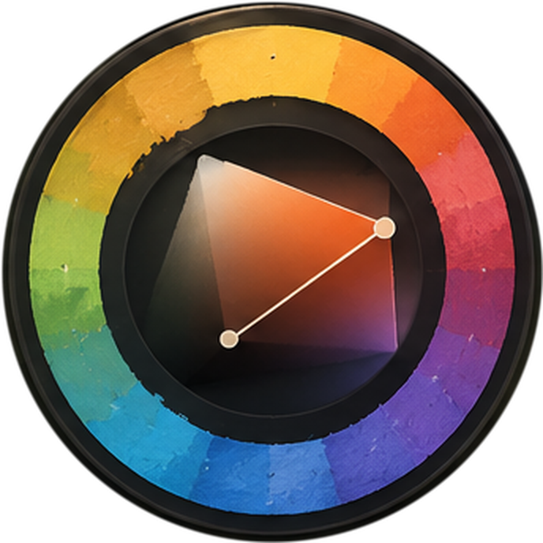
extrait du concept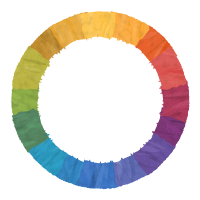
anneau-pastel.svg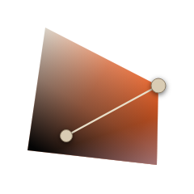
selecteur-triangle.svg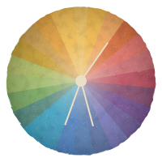
mini-roue-harmonie.svg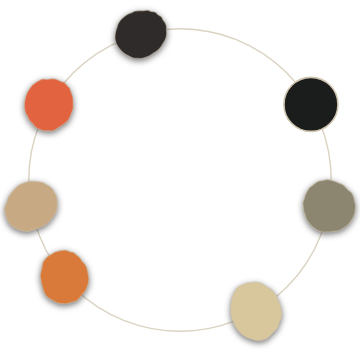
orbite-harmonie.svgTaches de pastel
Vecteur : 46 taches frottées et 46 pastilles, une par couleur échantillonnée dans le concept, plus des masques blancs à teinter en CSS.
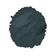
tache-ardoise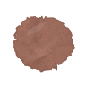
tache-argile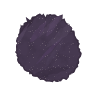
tache-aubergine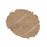
tache-beige-rosetache-bleu-azurtache-bleu-ciel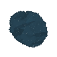
tache-bleu-nuittache-bleu-roi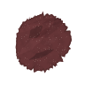
tache-bordeaux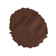
tache-cacaotache-canard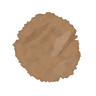
tache-caramel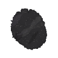
tache-charbontache-cobalt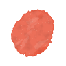
tache-corail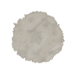
tache-craie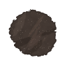
tache-ecorce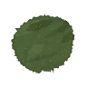
tache-feuillage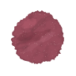
tache-framboise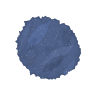
tache-indigo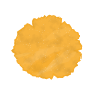
tache-jaune-safran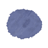
tache-lavande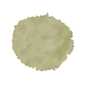
tache-lichen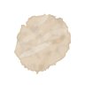
tache-lin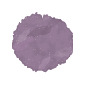
tache-mauve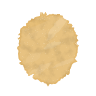
tache-miel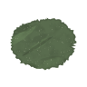
tache-mousse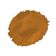
tache-ocre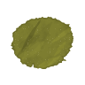
tache-olive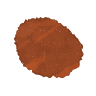
tache-orange-brule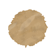
tache-paille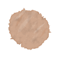
tache-pechetache-petrole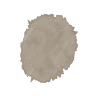
tache-pierre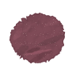
tache-prune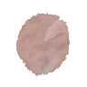
tache-rose-poudre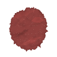
tache-rouge-brique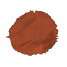
tache-rouille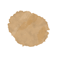
tache-sable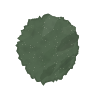
tache-sapin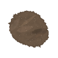
tache-taupe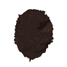
tache-terre-brulee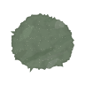
tache-vert-de-gris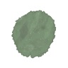
tache-vert-sauge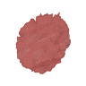
tache-vieux-rose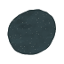
pastille-ardoise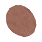
pastille-argile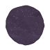
pastille-aubergine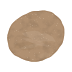
pastille-beige-rosepastille-bleu-azurpastille-bleu-ciel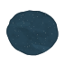
pastille-bleu-nuitpastille-bleu-roipastille-bordeauxpastille-cacaopastille-canardpastille-caramelpastille-charbonpastille-cobaltpastille-corailpastille-craiepastille-ecorcepastille-feuillagepastille-framboisepastille-indigopastille-jaune-safranpastille-lavandepastille-lichenpastille-linpastille-mauvepastille-mielpastille-moussepastille-ocrepastille-olivepastille-orange-brulepastille-paillepastille-pechepastille-petrolepastille-pierrepastille-prunepastille-rose-poudrepastille-rouge-briquepastille-rouillepastille-sablepastille-sapinpastille-taupepastille-terre-bruleepastille-vert-de-grispastille-vert-saugepastille-vieux-rosemasque-pastille-1masque-pastille-2masque-pastille-3masque-pastille-4masque-pastille-5masque-pastille-6masque-tache-1masque-tache-2masque-tache-3masque-tache-4masque-tache-5masque-tache-6 bandeau-variationsbarre-harmoniepalette-autumnpalette-earthpalette-forest-dawnpalette-mountain
03Taches extraites du concept
Détourées dans l'image d'origine : couronne de la roue, historique, palettes, variations, favoris.
favori-1favori-2favori-3favori-4favori-5historique-01historique-02historique-03historique-04historique-05historique-06historique-07historique-08historique-09historique-10historique-11historique-12historique-13historique-14historique-15historique-16historique-17historique-18historique-19historique-20historique-21historique-22historique-23historique-24palette-autumn-1palette-autumn-2palette-autumn-3palette-autumn-4palette-autumn-5palette-earth-1palette-earth-2palette-earth-3palette-earth-4palette-earth-5palette-forest-dawn-1palette-forest-dawn-2palette-forest-dawn-3palette-forest-dawn-4palette-forest-dawn-5palette-forest-dawn-6palette-mountain-1palette-mountain-2palette-mountain-3palette-mountain-4palette-mountain-5palette-mountain-6roue-favorite-01-sableroue-favorite-02-beige-roseroue-favorite-03-rouge-briqueroue-favorite-04-vert-saugeroue-favorite-05-bleu-roiroue-recente-01-ocreroue-recente-02-jaune-safranroue-recente-03-corailroue-recente-04-vieux-roseroue-recente-05-pruneroue-recente-06-bleu-cielroue-recente-07-bleu-azurvariation-1variation-2variation-3variation-4variation-5variation-6
04Pinceau
Traits vectoriels (hachures de pastel, fusain, fibres) et, à droite, le trait et les tuiles Forme / Texture / Dynamique extraits du concept.
trait-charbontrait-crayon-natureltrait-encre-finetrait-feutretrait-gouachetrait-pastel-sec
trait-crayon-naturel
dynamique-inclinaisondynamique-pressiondynamique-vitessedynamique-zigzagforme-biseau-clairforme-biseau-ocreforme-grain-poudreforme-ligne-fineforme-plume-douceforme-pointe-effileetexture-eclattexture-fibrestexture-griffurestexture-nuage-grainstexture-poussiere
brincouronne-arcliane-horizontaleliane-verticalerameau-coin-haut-droitfeuille-1feuille-2feuille-3feuille-4feuille-5feuille-6
bouquet-harmonie-droitebouquet-palettes-hautbouquet-pinceau-hautbouquet-pipettebranche-palettes-droitecouronne-roue-bascouronne-roue-gauchefeuille-roue-hautfeuilles-harmonie-bas-gauchefeuilles-rail-droitefeuilles-variations-gaucheliane-pinceau-droitevigne-harmonie-gauche
06Icônes
Trait 1,6 px, bouts arrondis, crème #e9dfc9. SVG 24 × 24 et PNG 24, 48, 96, 192 px.
feuillehistoriquemelangepalettepipettepipette-pleineroueannulercalqueschevron-baschevron-droitechevron-gauchechevron-hautcoeurcoeur-pleincopiercorbeilledeplacerdupliquerenregistreretoileetoile-pleineexporterfermergrilleimageimporterloupe-moinsloupe-plusmoinsoeiloptionsoptions-verticalpartagerplancheplusplus-cerclerecherchereglagesreinitialiserretablirvaliderverrouharm-analogiqueharm-complementaireharm-monochromeharm-tetradiqueharm-triadecrayonestompefeutreformegommemainplumeremplissageselection-lassosymetrieduretedyn-inclinaisondyn-pressiondyn-vitessedyn-zigzagespacementfluxopacitepinceautaille
07Interface
Panneaux, boutons, onglets, curseurs, liste, champ hexa, loupe, barres d'outils.
bouton-nouvelle-palettebouton-option-harmonie-actifbouton-outil-actifbouton-outil-reposbouton-plus-cerclebouton-reinitialiserbouton-rond-actifbouton-rond-reposbouton-vide-carrebouton-vide-rondonglet-actifonglet-reposroue-bouton-melangeroue-bouton-pipette-pleine roue-bouton-pipetteroue-bouton-plustuile-cadre-actiftuile-cadre-reposchamp-hexacurseur-12curseur-42curseur-70curseur-85liste-deroulantecadre-loupe + loupe-feuille-conceptbarre-outils-verticalerail-favorispanneau-470x300panneau-carre-230x280panneau-palettes-370x540panneau-pinceau-340x580rangee-palette-350x84
roue-bouton-pipetteroue-bouton-plustuile-cadre-actiftuile-cadre-reposchamp-hexacurseur-12curseur-42curseur-70curseur-85liste-deroulantecadre-loupe + loupe-feuille-conceptbarre-outils-verticalerail-favorispanneau-470x300panneau-carre-230x280panneau-palettes-370x540panneau-pinceau-340x580rangee-palette-350x84 paysage-autumnpaysage-earthpaysage-forest-dawnpaysage-mountainloupe-complete-conceptloupe-feuille-concept
acces-rapide-favoriscouleurs-recentesharmonies-de-couleurshistorique-acces-rapidepipette-sur-le-boardradial-color-pickervariations-rapides
fleche-courbe-droitefleche-courbe-gauchefleche-crochetfleche-montantefleche-vague
Interface
fond#212222
fond-vignette#2f2f2e
panneau#1e1f1f
panneau-haut#262727
panneau-bas#1a1b1b
bord#3a3a38
bord-clair#4a4843
creux#151616
bouton#2a2a29
bouton-haut#333331
actif#827565
actif-haut#978a77
creme#e9dfc9
creme-doux#cfc4ae
texte#e6ddcb
texte-doux#a39b8c
bronze#bfae98
bronze-fonce#6f6250
curseur#d9ccb4
piste#3b3a37
ombre#0b0c0c
Pigments
ocre#ad6b23
jaune-safran#f7b43f
corail#ec6f59
vieux-rose#b6625e
prune#7f4b57
bleu-ciel#5592bd
bleu-azur#6f98ba
sable#ceaa7e
beige-rose#b09071
rouge-brique#8f413e
vert-sauge#7b9175
bleu-roi#28577c
lichen#bab78e
olive#7d7d30
mousse#596c4e
ecorce#443933
framboise#984c5b
terre-brulee#2f211d
paille#bf9f72
sapin#536750
petrole#29556c
lavande#6d76a1
aubergine#463950
pierre#aca091
peche#cda78e
bordeaux#663537
argile#9e6c5d
ardoise#324347
lin#e1d0ba
caramel#ab8461
taupe#6b5745
cacao#57372b
rouille#9e492d
miel#e7c281
canard#295561
indigo#50628a
rose-poudre#bf9d95
vert-de-gris#6d7d68
orange-brule#964725
feuillage#4e6238
craie#bbb5aa
bleu-nuit#264353
mauve#967c97
cobalt#2d719c
charbon#2e2d2f